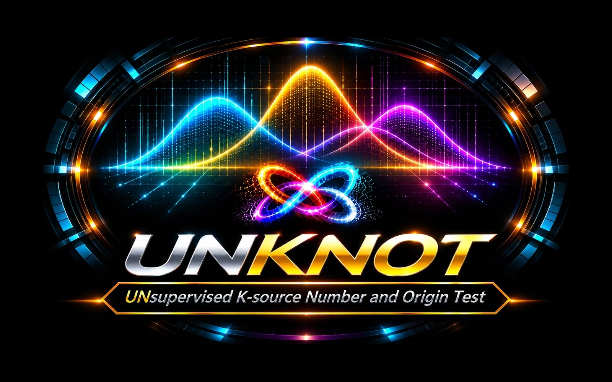
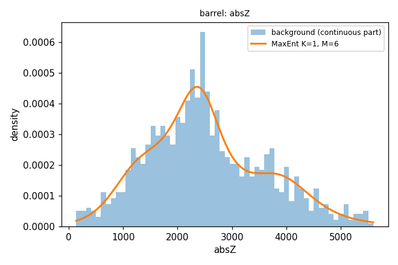
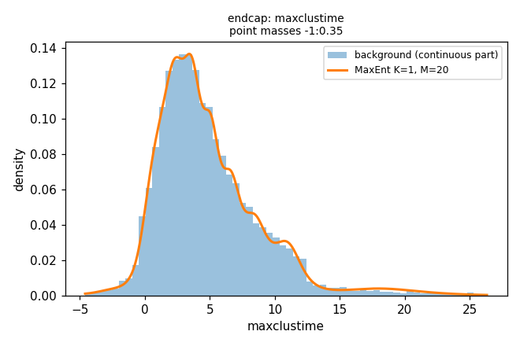

Describe each feature with a smooth curve, fit the background as a mix of 1 to 4 sources, and let the data choose the number.
Read the sources through the two network scores: split the bias into dependence inside each source and dependence created by mixing them.
Every answer is a statistical test with a stated confidence. No count and no label without one. Background data only.
How this was built: a "double-blind" outline
— Nathan
UNKNOT never saw rank-K or the paper while it was designed, run and written up.
Rank-K existed before UNKNOT, so it could not borrow from it. Two independent constructions.
The question, the three suspected sources, the group's ABCD method and the shared data files.
When estimating a probability distribution from partial information, choose the distribution with the highest entropy among all those that satisfy your known constraints.
OUR ASSUMPTIONInside each source, every feature follows the maximum-entropy curve for a few measured averages. A choice, not a proof.
Negative mean log-likelihood of the 80% fit events (cross-entropy). Convex: one exact answer by Newton steps, no neural net. The solution is the max-entropy curve matching the \(M\) averages \(\hat{\boldsymbol\mu}\).


Held-out: 5-fold, fit on 80% of events, score on the 20% it never saw, every event tested once. M = how many averages [summary statistics] the curve matches (the detail dial). Gain = how much better the curve predicts those unseen events than a 40-bin histogram (+0.02 nats/event ≈ 2% more probable per event). Chosen M = the smallest M within one standard error of the best.
Entropy measures how uncertain, or spread out, a distribution is. For a feature described by a smooth density \(f(x)\), the continuous version of \(p(x)\), the sum becomes \(-\int f(x) \ln f(x)\,dx\). Maximum entropy makes this as large as the measured averages allow.
Maximum entropy describes each feature on its own. Two paths turn those curves into statements about the background as a whole.
A z-score, not the \(|z|\) position and not a Legendre term. For each held-out event, \(d_i = \log p_{\text{groups}}(x_i) - \log p_{\text{trend}}(x_i)\); then \(z = \bar d \,/\, (s_d/\sqrt{n})\): how many standard errors the groups beat a single smooth trend.
|z| < 2 no real difference · z = 9 far beyond noise · z < 0 the trend wins
phase 1 · each feature on its own · per region
From the most recent background files (DataHTMissLow, data24), mk1 run.
Missing: how the features combine. One background, or several?
Assume the background is a mix of up to four sources: try \(K = 1, 2, 3, 4\). Take 2 or 3 features at a time. Inside a source they are independent, so their curves multiply; the sources mix by their shares. Fit each \(K\), then let four independent gates decide.
\(K\) with a stated confidence; each source's share and its shape in every feature
Endcap: one background drifting with activity; at fixed activity a smooth trend does as well as groups: \(z = -1.3\)
Barrel: one candidate split by position, 56/44; passes all four gates (30/30 re-draws); acceptance not yet ruled out. Groups beat a smooth trend: \(z = 9.1\)
Add NN1 and NN2, the two network scores that define the ABCD plane. Split the non-closure into dependence inside each source and dependence created by mixing sources, and follow it as the cuts move.
Bias against cut, per source, each with its error
How much of the ABCD bias comes from mixing and how much from inside each source, cut by cut, with errors from resampling. Not yet run: no confidence to state yet.
WHAT IS A LIKELIHOOD?A likelihood scores each hypothesis by how probable it makes the data we actually observed, so hypotheses can be compared on the same data. Per event it is the curve's height \(f(x_i)\); over all events, \(\log L = \sum_i \log f(x_i)\). What it gives us: one score for 1 source against 2, a curve against a histogram, M = 6 against M = 20, measured on events the fit never saw.
BOTH PATHSBackground data only · every answer a statistical test with a stated confidence · built blind to the rank-K study and the ATLAS paper
ENDCAPOne background, drifting with activity.
BARRELOne candidate split by position; acceptance not yet ruled out.
The slides that follow are working material from the mk1 deck. They have not yet been re-vetted for this overview.
The background in the muon-spectrometer vertex search (MSVtx) may not be one thing. Collision debris, beam halo and cosmic rays can all leave displaced vertices. UNKNOT asks how many distinct sources the background really holds (one, two, three or four), with a stated confidence for each answer.
The ABCD method assumes the two network scores are independent. Mixing sources with different shapes creates a correlation between the scores even when no single source has one, and that is enough to break closure. Knowing the sources tells us where ABCD can be trusted.
Use the background alone. Describe each feature with a smooth maximum-entropy curve instead of bins, model the data as a sum of \(K\) sources, and believe a count only when independent statistical gates agree. Then check physics fingerprints (direction, missing momentum) to name what each group is.
Of every curve that reproduces a few measured averages of a feature, take the one with the most entropy: it assumes nothing else.
make_feature_panels.py on the mk1 background file. No data embedded yet.Counting lane fits MaxEnt curves; fingerprint lane checks which physics the groups look like.
MSVtx data, background only
HSS signal used only as an acceptance reference
Flag bad values and placeholders
Split: Barrel / Endcap
Timing: \(|\eta|\), \(t\)
Position: \(|\sin\phi|\), \(|z|\), hits
Activity, scores
A smooth curve per feature, built from a few measured averages
one per feature, per source · no bins
Background = weighted sum of sources
try 1, 2, 3, 4 sources
G1 scorecard
G2 shuffle
G3 stability
G4 trend vs groups
Believed only if every gate passes
Direction vs detector acceptance · Vertex ↔ missing-momentum pointing
cosmics · beam halo · collision debris
Example: Barrel, position features (\(|\sin\phi|\), \(|z|\), outer-station hits). A group count is believed only if it passes every gate.